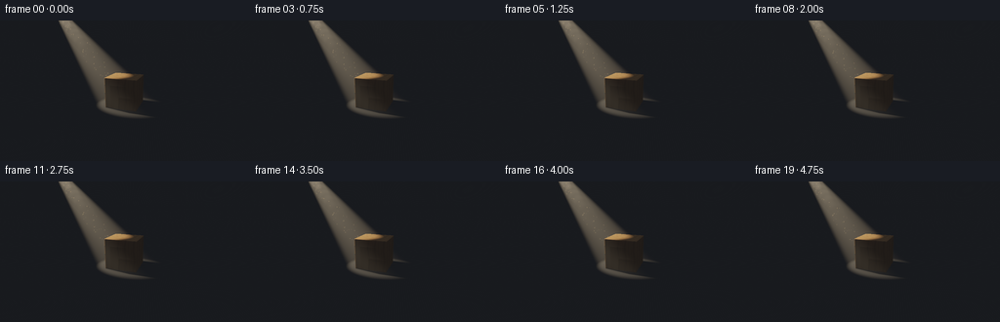
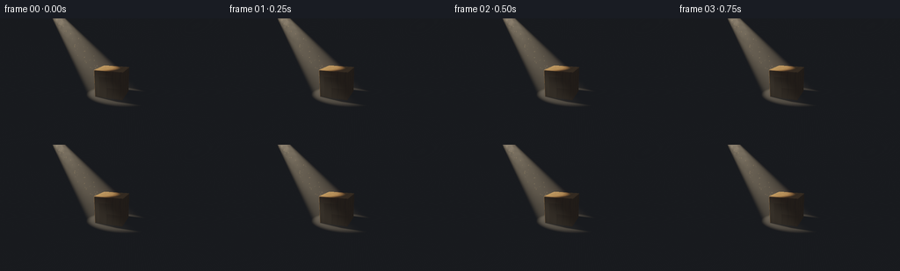

CODING AGENTS AS PIXEL WORLD MODELS
traex/GPT-6.1-Sol · phygen_041
点击播放 · 原生 RGB 像素
此结果可播放，但该运行尚未通过最终提交审核。页面展示不代表评测通过。
逐轮保存的候选
回放视频、检查图与代码变化。
每份候选均可单独播放。实际图片检查记录在下方工具轨迹中。
候选 01播放与检查图
点击播放 · 原生 RGB 像素


展开代码变化
--- 上一保存版本
+++ 本次保存版本
@@ -0,0 +1,194 @@
+from pathlib import Path
+import json
+import numpy as np
+from PIL import Image, ImageFilter
+import artifact_io
+
+ROOT = Path(__file__).resolve().parent
+SPEC = json.loads((ROOT/'task_spec.json').read_text())
+W,H=SPEC['width'],SPEC['height']
+S=3
+w,h=W*S,H*S
+rng=np.random.default_rng(41)
+
+def norm(v):
+ return v/np.maximum(np.linalg.norm(v,axis=-1,keepdims=True),1e-9)
+
+# Quiet, locked-off cinematic camera; all geometry is generated here.
+cam=np.array([3.8,3.5,7.7])
+target=np.array([0.,.86,0.])
+forward=norm(target-cam)
+right=norm(np.cross(forward,[0.,1.,0.]))
+up=np.cross(right,forward)
+xx,yy=np.meshgrid((np.arange(w)+.5-w/2)/h,(h/2-np.arange(h)-.5)/h)
+rays=norm(forward+xx[...,None]*right*.91+yy[...,None]*up*.91).reshape(-1,3)
+N=len(rays)
+center=np.array([0.,.87,0.])
+a=.12
+rot=np.array([[np.cos(a),0,np.sin(a)],[0,1,0],[-np.sin(a),0,np.cos(a)]])
+b=np.array([.86,.82,.76]); bevel=.045
+light=np.array([-4.7,6.1,.65])
+aim=np.array([.0,.05,0.])
+laxis=norm(aim-light)
+
+# Analytic slab tracing followed by a small rounded-box distance refinement.
+def slab(o,d,half):
+ inv=np.divide(1.,d,out=np.full_like(d,1e10),where=np.abs(d)>1e-10)
+ t0=(-half-o)*inv; t1=(half-o)*inv
+ near=np.max(np.minimum(t0,t1),axis=-1)
+ far=np.min(np.maximum(t0,t1),axis=-1)
+ return near,far
+
+oc=(cam-center)@rot
+dl=rays@rot
+near,far=slab(oc,dl,b+bevel)
+valid=(far>=np.maximum(near,0))
+ids=np.where(valid)[0]
+tc=np.maximum(near[ids],0)
+for _ in range(32):
+ p=oc+dl[ids]*tc[:,None]
+ q=np.abs(p)-b
+ sd=np.linalg.norm(np.maximum(q,0),axis=-1)+np.minimum(np.max(q,axis=-1),0)-bevel
+ tc+=np.maximum(sd,0)
+hit=tc<far[ids]+1e-4
+ids=ids[hit]; tc=tc[hit]
+tblock=np.full(N,np.inf);tblock[ids]=tc
+floor_t=-cam[1]/rays[:,1]
+floor_t=np.where((floor_t>0)&(rays[:,1]<0),floor_t,90.)
+block=tblock<floor_t
+t=np.minimum(tblock,floor_t)
+p=cam+rays*t[:,None]
+normal=np.zeros_like(p);normal[:,1]=1
+lp=(p[block]-center)@rot
+q=lp-np.clip(lp,-b,b)
+normal[block]=norm(q)@rot.T
+
+# Procedural oak: elongated pores, nonuniform growth rings, and end grain.
+def wood(local):
+ x,y,z=local.T
+ warp=.025*np.sin(5.0*y+7*z)+.009*np.sin(17*y-6*x)
+ radius=np.sqrt(((x+.94+warp)*.84)**2+((z+.42)*1.1)**2)
+ ring=radius*30 + .9*np.sin(radius*12)+.25*np.sin(y*4+z*8)
+ rings=(.5+.5*np.sin(ring))**8
+ thin=(.5+.5*np.sin(ring*2.9+.8*np.sin(y*5)))**18
+ fibers=np.sin(x*186+z*154+.65*np.sin(y*5)+2*np.sin(x*12+z*9))
+ fibers2=np.sin(x*421+z*376+.3*np.sin(y*10))
+ pore=np.maximum(fibers,0)**16
+ variation=.93-.19*rings-.07*thin-.07*pore+.025*fibers2
+ # Small open pores and golden bands, kept in world space.
+ variation+=.025*np.sin(41*x+27*z+2*np.sin(y*2))
+ return np.clip(variation[:,None]*np.array([.53,.285,.105]),0,1)
+
+albedo=np.tile([.068,.070,.072],(N,1)).astype(float)
+# Almost invisible mineral roughness in the charcoal floor.
+floortex=.003*np.sin(p[:,0]*57+p[:,2]*38)*np.sin(p[:,2]*63-p[:,0]*15)
+albedo+=floortex[:,None]
+albedo[block]=wood(lp)
+
+# Soft physical shadows from a compact area source, including contact shadow.
+def visibility(pos, src):
+ d=src-pos
+ dist=np.linalg.norm(d,axis=-1)
+ direction=d/dist[:,None]
+ o=(pos+normal*.0015-center)@rot
+ rd=direction@rot
+ lo,hi=slab(o,rd,b+bevel*.7)
+ return (~((hi>np.maximum(lo,.001))&(lo<dist)&(hi>.003))).astype(float)
+
+vis=np.zeros(N)
+for k in range(16):
+ phi=k*2.399963
+ rr=.13*np.sqrt((k+.5)/16)
+ src=light+np.array([rr*np.cos(phi),0,rr*np.sin(phi)])
+ vis+=visibility(p,src)
+vis/=16
+L=light-p
+dist=np.linalg.norm(L,axis=-1)
+ld=L/dist[:,None]
+angle=np.sum(-ld*laxis,axis=-1)
+# Narrow spotlight beam with a feathered edge.
+cone=np.clip((angle-np.cos(.215))/(np.cos(.145)-np.cos(.215)),0,1)
+cone=cone*cone*(3-2*cone)
+ndotl=np.maximum(np.sum(normal*ld,axis=-1),0)
+illum=62/(dist*dist)*cone*vis
+amb=.020+.045*np.maximum(normal[:,1],0)
+base=albedo*(amb[:,None]*np.array([.65,.73,.93])+illum[:,None]*ndotl[:,None]*np.array([1.,.80,.55]))
+# Restrained satin highlights on wood, broad floor glint.
+half=norm(ld-rays)
+nh=np.maximum(np.sum(normal*half,axis=-1),0)
+specular=(nh**48)*.12*illum
+base+=specular[:,None]*np.array([1.,.85,.65])
+# Gentle occlusion directly under the block.
+rad=np.sqrt((p[:,0]/1.2)**2+(p[:,2]/1.05)**2)
+ao=1-.38*np.exp(-rad*rad*1.6)
+base[~block]*=ao[~block,None]
+
+# Integrate single scattering along camera rays. Box occlusion cuts the shaft
+# behind the object, so the beam and its floor shadow remain consistent.
+volume=np.zeros((N,3))
+steps=76
+step=np.minimum(t,19.)/steps
+for k in range(steps):
+ tt=(k+.5)*step
+ pos=cam+rays*tt[:,None]
+ v=pos-light
+ d=np.linalg.norm(v,axis=-1)
+ cos=np.sum(v*laxis,axis=-1)/np.maximum(d,1e-7)
+ co=np.clip((cos-np.cos(.208))/(np.cos(.152)-np.cos(.208)),0,1)
+ co=co*co*(3-2*co)
+ # Shadow ray to light, using the same wooden solid.
+ vl=norm(light-pos)
+ lo,hi=slab((pos-center)@rot,vl@rot,b+bevel*.7)
+ clear=~((hi>np.maximum(lo,.001))&(lo<d)&(hi>.003))
+ haze=.80+.12*np.sin(pos[:,0]*2+pos[:,1]*3)+.08*np.sin(pos[:,2]*3-pos[:,1]*2)
+ scatter=.030*co*clear*haze*48/(d*d+1)*step
+ volume+=scatter[:,None]*np.array([1.,.80,.53])
+
+linear=base+volume+np.array([.0010,.0013,.0019])
+# Fine lens glow, without washing out the dark silhouette on the ground.
+def display(lin):
+ lin=lin.reshape(h,w,3)
+ exposed=lin*1.55
+ mapped=exposed/(1+exposed)
+ rgb=np.clip(mapped,0,1)**(1/2.2)
+ return (rgb*255).astype(np.uint8)
+
+background=display(linear)
+bloom=np.maximum(background.astype(float)-112,0)
+glow=Image.fromarray(np.uint8(np.clip(bloom,0,255))).filter(ImageFilter.GaussianBlur(6*S))
+background=np.clip(background.astype(float)+np.asarray(glow)*.17,0,255)
+# Sparse airborne specks move down the shaft; not a moving light or camera.
+motes=[]
+for _ in range(75):
+ s=rng.uniform(.17,.95)
+ pos=light+(aim-light)*s+rng.normal(0,.10+ .15*s,3)
+ motes.append((pos,rng.uniform(.007,.024),rng.uniform(.02,.05),rng.uniform(0,6.28)))
+
+def project(pos):
+ rel=pos-cam
+ z=np.dot(rel,forward)
+ return w/2+np.dot(rel,right)/z*h/.91,h/2-np.dot(rel,up)/z*h/.91,z
+
+frames=[]
+for i in range(SPEC['frames']):
+ time=i/SPEC['fps']
+ image=background.copy()
+ # Very subtle steady atmospheric circulation.
+ for pos,size,speed,phase in motes:
+ pp=pos+np.array([.025*np.sin(time*.7+phase),-speed*time,.015*np.cos(time*.6+phase)])
+ px,py,z=project(pp)
+ if not (2<px<w-2 and 2<py<h-2 and z>0):continue
+ xi,yi=int(px),int(py)
+ pixid=yi*w+xi
+ if np.linalg.norm(pp-cam)>t[pixid]:continue
+ vd=pp-light
+ c=np.dot(norm(vd),laxis)
+ if c<np.cos(.17):continue
+ r=max(.5,size*h/z)
+ yy2,xx2=np.mgrid[max(0,yi-3):min(h,yi+4),max(0,xi-3):min(w,xi+4)]
+ spot=np.exp(-((xx2-px)**2+(yy2-py)**2)/(2*r*r))
+ image[max(0,yi-3):min(h,yi+4),max(0,xi-3):min(w,xi+4)]+=spot[...,None]*np.array([36,29,17])
+ im=Image.fromarray(np.uint8(np.clip(image,0,255))).resize((W,H),Image.Resampling.LANCZOS)
+ frames.append(np.asarray(im))
+artifact_io.save(np.stack(frames),ROOT)
+print('Saved',len(frames),'RGB frames at',W,H)
候选 02播放与检查图
点击播放 · 原生 RGB 像素
展开代码变化
--- 上一保存版本
+++ 本次保存版本
@@ -15,8 +15,8 @@
return v/np.maximum(np.linalg.norm(v,axis=-1,keepdims=True),1e-9)
# Quiet, locked-off cinematic camera; all geometry is generated here.
-cam=np.array([3.8,3.5,7.7])
-target=np.array([0.,.86,0.])
+cam=np.array([3.2,2.9,6.5])
+target=np.array([0.,.72,0.])
forward=norm(target-cam)
right=norm(np.cross(forward,[0.,1.,0.]))
up=np.cross(right,forward)
@@ -27,7 +27,7 @@
a=.12
rot=np.array([[np.cos(a),0,np.sin(a)],[0,1,0],[-np.sin(a),0,np.cos(a)]])
b=np.array([.86,.82,.76]); bevel=.045
-light=np.array([-4.7,6.1,.65])
+light=np.array([-3.8,5.,-3.])
aim=np.array([.0,.05,0.])
laxis=norm(aim-light)
@@ -107,12 +107,12 @@
ld=L/dist[:,None]
angle=np.sum(-ld*laxis,axis=-1)
# Narrow spotlight beam with a feathered edge.
-cone=np.clip((angle-np.cos(.215))/(np.cos(.145)-np.cos(.215)),0,1)
+cone=np.clip((angle-np.cos(.29))/(np.cos(.205)-np.cos(.29)),0,1)
cone=cone*cone*(3-2*cone)
ndotl=np.maximum(np.sum(normal*ld,axis=-1),0)
illum=62/(dist*dist)*cone*vis
-amb=.020+.045*np.maximum(normal[:,1],0)
-base=albedo*(amb[:,None]*np.array([.65,.73,.93])+illum[:,None]*ndotl[:,None]*np.array([1.,.80,.55]))
+amb=.075+.050*np.maximum(normal[:,1],0)
+base=albedo*(amb[:,None]*np.array([.83,.80,.78])+illum[:,None]*ndotl[:,None]*np.array([1.,.80,.55]))
# Restrained satin highlights on wood, broad floor glint.
half=norm(ld-rays)
nh=np.maximum(np.sum(normal*half,axis=-1),0)
@@ -134,7 +134,7 @@
v=pos-light
d=np.linalg.norm(v,axis=-1)
cos=np.sum(v*laxis,axis=-1)/np.maximum(d,1e-7)
- co=np.clip((cos-np.cos(.208))/(np.cos(.152)-np.cos(.208)),0,1)
+ co=np.clip((cos-np.cos(.282))/(np.cos(.21)-np.cos(.282)),0,1)
co=co*co*(3-2*co)
# Shadow ray to light, using the same wooden solid.
vl=norm(light-pos)
@@ -183,7 +183,7 @@
if np.linalg.norm(pp-cam)>t[pixid]:continue
vd=pp-light
c=np.dot(norm(vd),laxis)
- if c<np.cos(.17):continue
+ if c<np.cos(.225):continue
r=max(.5,size*h/z)
yy2,xx2=np.mgrid[max(0,yi-3):min(h,yi+4),max(0,xi-3):min(w,xi+4)]
spot=np.exp(-((xx2-px)**2+(yy2-py)**2)/(2*r*r))
候选 03播放与检查图
可观测工具轨迹
实际执行的命令与返回图片。
命令 1exit 0
/bin/bash -lc "ls -la && cat prompt.txt && printf '\\n---RULES---\\n' && cat GENERATION_RULES.md && printf '\\n---SPEC---\\n' && cat task_spec.json"
命令 2exit 0
/bin/bash -lc "cat artifact_io.py && python - <<'PY'
import numpy, PIL
print('numpy and PIL available')
PY"命令 3exit 0
/bin/bash -lc "cat > generate.py <<'PY'
from pathlib import Path
import json
import numpy as np
from PIL import Image, ImageFilter
import artifact_io
ROOT = Path(__file__).resolve().parent
SPEC = json.loads((ROOT/'task_spec.json').read_text())
W,H=SPEC['width'],SPEC['height']
S=3
w,h=W*S,H*S
rng=np.random.default_rng(41)
def norm(v):
return v/np.maximum(np.linalg.norm(v,axis=-1,keepdims=True),1e-9)
# Quiet, locked-off cinematic camera; all geometry is generated here.
cam=np.array([3.8,3.5,7.7])
target=np.array([0.,.86,0.])
forward=norm(target-cam)
right=norm(np.cross(forward,[0.,1.,0.]))
up=np.cross(right,forward)
xx,yy=np.meshgrid((np.arange(w)+.5-w/2)/h,(h/2-np.arange(h)-.5)/h)
rays=norm(forward+xx[...,None]*right*.91+yy[...,None]*up*.91).reshape(-1,3)
N=len(rays)
center=np.array([0.,.87,0.])
a=.12
rot=np.array([[np.cos(a),0,np.sin(a)],[0,1,0],[-np.sin(a),0,np.cos(a)]])
b=np.array([.86,.82,.76]); bevel=.045
light=np.array([-4.7,6.1,.65])
aim=np.array([.0,.05,0.])
laxis=norm(aim-light)
# Analytic slab tracing followed by a small rounded-box distance refinement.
def slab(o,d,half):
inv=np.divide(1.,d,out=np.full_like(d,1e10),where=np.abs(d)>1e-10)
t0=(-half-o)*inv; t1=(half-o)*inv
near=np.max(np.minimum(t0,t1),axis=-1)
far=np.min(np.maximum(t0,t1),axis=-1)
return near,far
oc=(cam-center)@rot
dl=rays@rot
near,far=slab(oc,dl,b+bevel)
valid=(far>=np.maximum(near,0))
ids=np.where(valid)[0]
tc=np.maximum(near[ids],0)
for _ in range(32):
p=oc+dl[ids]*tc[:,None]
q=np.abs(p)-b
sd=np.linalg.norm(np.maximum(q,0),axis=-1)+np.minimum(np.max(q,axis=-1),0)-bevel
tc+=np.maximum(sd,0)
hit=tc<far[ids]+1e-4
ids=ids[hit]; tc=tc[hit]
tblock=np.full(N,np.inf);tblock[ids]=tc
floor_t=-cam[1]/rays[:,1]
floor_t=np.where((floor_t>0)&(rays[:,1]<0),floor_t,90.)
block=tblock<floor_t
t=np.minimum(tblock,floor_t)
p=cam+rays*t[:,None]
normal=np.zeros_like(p);normal[:,1]=1
lp=(p[block]-center)@rot
q=lp-np.clip(lp,-b,b)
normal[block]=norm(q)@rot.T
# Procedural oak: elongated pores, nonuniform growth rings, and end grain.
def wood(local):
x,y,z=local.T
warp=.025*np.sin(5.0*y+7*z)+.009*np.sin(17*y-6*x)
radius=np.sqrt(((x+.94+warp)*.84)**2+((z+.42)*1.1)**2)
ring=radius*30 + .9*np.sin(radius*12)+.25*np.sin(y*4+z*8)
rings=(.5+.5*np.sin(ring))**8
thin=(.5+.5*np.sin(ring*2.9+.8*np.sin(y*5)))**18
fibers=np.sin(x*186+z*154+.65*np.sin(y*5)+2*np.sin(x*12+z*9))
fibers2=np.sin(x*421+z*376+.3*np.sin(y*10))
pore=np.maximum(fibers,0)**16
variation=.93-.19*rings-.07*thin-.07*pore+.025*fibers2
# Small open pores and golden bands, kept in world space.
variation+=.025*np.sin(41*x+27*z+2*np.sin(y*2))
return np.clip(variation[:,None]*np.array([.53,.285,.105]),0,1)
albedo=np.tile([.068,.070,.072],(N,1)).astype(float)
# Almost invisible mineral roughness in the charcoal floor.
floortex=.003*np.sin(p[:,0]*57+p[:,2]*38)*np.sin(p[:,2]*63-p[:,0]*15)
albedo+=floortex[:,None]
albedo[block]=wood(lp)
# Soft physical shadows from a compact area source, including contact shadow.
def visibility(pos, src):
d=src-pos
dist=np.linalg.norm(d,axis=-1)
direction=d/dist[:,None]
o=(pos+normal*.0015-center)@rot
rd=direction@rot
lo,hi=slab(o,rd,b+bevel*.7)
return (~((hi>np.maximum(lo,.001))&(lo<dist)&(hi>.003))).astype(float)
vis=np.zeros(N)
for k in range(16):
phi=k*2.399963
rr=.13*np.sqrt((k+.5)/16)
src=light+np.array([rr*np.cos(phi),0,rr*np.sin(phi)])
vis+=visibility(p,src)
vis/=16
L=light-p
dist=np.linalg.norm(L,axis=-1)
ld=L/dist[:,None]
angle=np.sum(-ld*laxis,axis=-1)
# Narrow spotlight beam with a feathered edge.
cone=np.clip((angle-np.cos(.215))/(np.cos(.145)-np.cos(.215)),0,1)
cone=cone*cone*(3-2*cone)
ndotl=np.maximum(np.sum(normal*ld,axis=-1),0)
illum=62/(dist*dist)*cone*vis
amb=.020+.045*np.maximum(normal[:,1],0)
base=albedo*(amb[:,None]*np.array([.65,.73,.93])+illum[:,None]*ndotl[:,None]*np.array([1.,.80,.55]))
# Restrained satin highlights on wood, broad floor glint.
half=norm(ld-rays)
nh=np.maximum(np.sum(normal*half,axis=-1),0)
specular=(nh**48)*.12*illum
base+=specular[:,None]*np.array([1.,.85,.65])
# Gentle occlusion directly under the block.
rad=np.sqrt((p[:,0]/1.2)**2+(p[:,2]/1.05)**2)
ao=1-.38*np.exp(-rad*rad*1.6)
base[~block]*=ao[~block,None]
# Integrate single scattering along camera rays. Box occlusion cuts the shaft
# behind the object, so the beam and its floor shadow remain consistent.
volume=np.zeros((N,3))
steps=76
step=np.minimum(t,19.)/steps
for k in range(steps):
tt=(k+.5)*step
pos=cam+rays*tt[:,None]
v=pos-light
d=np.linalg.norm(v,axis=-1)
cos=np.sum(v*laxis,axis=-1)/np.maximum(d,1e-7)
co=np.clip((cos-np.cos(.208))/(np.cos(.152)-np.cos(.208)),0,1)
co=co*co*(3-2*co)
# Shadow ray to light, using the same wooden solid.
vl=norm(light-pos)
lo,hi=slab((pos-center)@rot,vl@rot,b+bevel*.7)
clear=~((hi>np.maximum(lo,.001))&(lo<d)&(hi>.003))
haze=.80+.12*np.sin(pos[:,0]*2+pos[:,1]*3)+.08*np.sin(pos[:,2]*3-pos[:,1]*2)
scatter=.030*co*clear*haze*48/(d*d+1)*step
volume+=scatter[:,None]*np.array([1.,.80,.53])
linear=base+volume+np.array([.0010,.0013,.0019])
# Fine lens glow, without washing out the dark silhouette on the ground.
def display(lin):
lin=lin.reshape(h,w,3)
exposed=lin*1.55
mapped=exposed/(1+exposed)
rgb=np.clip(mapped,0,1)**(1/2.2)
return (rgb*255).astype(np.uint8)
background=display(linear)
bloom=np.maximum(background.astype(float)-112,0)
glow=Image.fromarray(np.uint8(np.clip(bloom,0,255))).filter(ImageFilter.GaussianBlur(6*S))
background=np.clip(background.astype(float)+np.asarray(glow)*.17,0,255)
# Sparse airborne specks move down the shaft; not a moving light or camera.
motes=[]
for _ in range(75):
s=rng.uniform(.17,.95)
pos=light+(aim-light)*s+rng.normal(0,.10+ .15*s,3)
motes.append((pos,rng.uniform(.007,.024),rng.uniform(.02,.05),rng.uniform(0,6.28)))
def project(pos):
rel=pos-cam
z=np.dot(rel,forward)
return w/2+np.dot(rel,right)/z*h/.91,h/2-np.dot(rel,up)/z*h/.91,z
frames=[]
for i in range(SPEC['frames']):
time=i/SPEC['fps']
image=background.copy()
# Very subtle steady atmospheric circulation.
for pos,size,speed,phase in motes:
pp=pos+np.array([.025*np.sin(time*.7+phase),-speed*time,.015*np.cos(time*.6+phase)])
px,py,z=project(pp)
if not (2<px<w-2 and 2<py<h-2 and z>0):continue
xi,yi=int(px),int(py)
pixid=yi*w+xi
if np.linalg.norm(pp-cam)>t[pixid]:continue
vd=pp-light
c=np.dot(norm(vd),laxis)
if c<np.cos(.17):continue
r=max(.5,size*h/z)
yy2,xx2=np.mgrid[max(0,yi-3):min(h,yi+4),max(0,xi-3):min(w,xi+4)]
spot=np.exp(-((xx2-px)**2+(yy2-py)**2)/(2*r*r))
image[max(0,yi-3):min(h,yi+4),max(0,xi-3):min(w,xi+4)]+=spot[...,None]*np.array([36,29,17])
im=Image.fromarray(np.uint8(np.clip(image,0,255))).resize((W,H),Image.Resampling.LANCZOS)
frames.append(np.asarray(im))
artifact_io.save(np.stack(frames),ROOT)
print('Saved',len(frames),'RGB frames at',W,H)
PY
OPENBLAS_NUM_THREADS=1 python generate.py"命令 4exit 0
/bin/bash -lc "python - <<'PY'
p='generate.py'
s=open(p).read().replace('cam=np.array([3.8,3.5,7.7])','cam=np.array([3.2,2.9,6.5])').replace('target=np.array([0.,.86,0.])','target=np.array([0.,.72,0.])').replace('light=np.array([-4.7,6.1,.65])','light=np.array([-3.8,5.,-3.])').replace('np.cos(.215)','np.cos(.29)').replace('np.cos(.145)','np.cos(.205)').replace('np.cos(.208)','np.cos(.282)').replace('np.cos(.152)','np.cos(.21)').replace('amb=.020+.045','amb=.075+.050').replace('np.array([.65,.73,.93])','np.array([.83,.80,.78])').replace('np.cos(.17)','np.cos(.225)')
open(p,'w').write(s)
PY
OPENBLAS_NUM_THREADS=1 python generate.py"保存候选 3 份；完成命令 4 次；可验证图片返回 0 张。原始 API 响应与完整日志保留在本地。